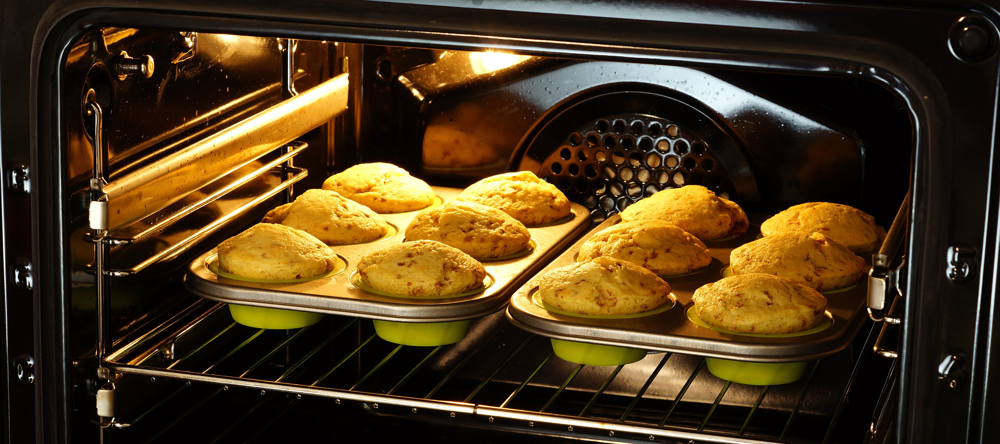
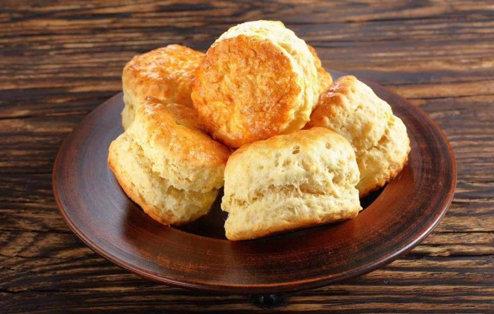

1. Sieve flour and salt into a bowl, stir in sugar, if used.

2. Rub in butter/margarine
3. Add sufficient milk to make a soft dough.
4.Turn onto a floured board and gently knead to remove any cracks.
5.Roll out lightly to 1" in thickness. Cut into scones with a cutter dipped in flour.
6.Place on a floured preheated baking sheet/tray, glaze if liked with beaten egg or milk.

7.Bake in a preheated oven 220°C/425°F/Gas 8 on upper shelf position for 10 mins approx.
8.Cool on a wire tray.
Your scone should look like the image on the left, the texture must be golden, you can place a nice through the scone to know it is done